| The coordination of metabolism in the
separate organs of mammals is achieved by hormonal and
neuronal signaling. Individual cells in one tissue sense
a change in the organism's circumstances and respond by
secreting an extracellular chemical messenger. Endocrine
cells secrete hormones; neurons secrete
neurotransmitters. In each case, the extracellular
messenger passes to another cell where it binds to a
specific receptor molecule and triggers a change in the
activity of the second cell. In neuronal signaling (Fig.
22-lla), the chemical messenger (neurotransmitter;
acetylcholine, for example) may travel only a fraction of
a micrometer, across the synaptic cleft to the next
neuron in a chain. In contrast, hormones are carried
rapidly in the blood between distant organs and tissues;
they may travel a meter or more before encountering their
target cell (Fig. 22-llb). Except for this anatomical
difference, the chemical signaling in the neural and
endocrine systems is remarkably similar in mechanism.
Even some of the chemical messengers are common to both
systems. Epinephrine and norepinephrine, for example,
serve as neurotransmitters in certain synapses of the
brain and smooth muscle and also as hormones regulating
fuel metabolism in the liver and in muscle. Although the
neural and endocrine systems were traditionally treated
as separate entities, it has become clear that in the
regulation of metabolism they merge into a single
neuroendocrine system. In the following discussion of
cellular signaling, we emphasize hormone action and the
endocrine system, drawing illustrations from our previous
discussions of fuel metabolism. However, most of the
fundamental mechanisms described here also occur in
neurotransmitter action in the neural system. The word hormone is derived from the Greek verb horman, meaning "to stir up or excite." The concept of hormones as internal signals is not new; the physiologist Claude Bernard used the term "internal secretion" in 1855 to distinguish between components secreted into the bloodstream and "external secretions" such as sweat and tears. Ernest Henry Starling introduced the term hormone in 1905 in a famous lecture "The Chemical Correlation of the Functions of the Body." We now know that hormones control not only different aspects of metabolism but also many other functions: cell and tissue growth, heart rate, blood pressure, kidney function, motility of the gastrointestinal tract, secretion of digestive enzymes and of other hormones, lactation, and the activity of the reproductive systems. We introduce here the major classes of hormones, their tissues of origin, and their general properties. |
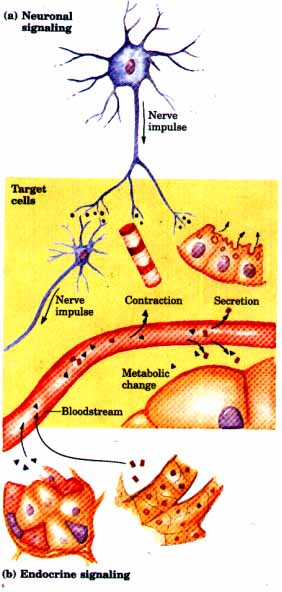 Figure 22-11 Signaling by the neural and endocrine systems. (a) In neuronal signaling electrical signals (nerve impulses) originate in the cell body and are carried very rapidly over long distances to the axon tip, where neurotransmitters are released and diffuse to the target cell. The target cell, which may be another neuron, a myocyte, or a secretory cell, is only a fraction of a micrometer or a few micrometers away from the site of neurotransmitter release. (b) In the endocrine system hormones are secreted by the producing cell into the bloodstream, which carries them throughout the body to target tissues that may be more than a meter away from the secreting cell. Both neurotransmitters and hormones interact with specific receptors on or in the target cell, triggering responses. |
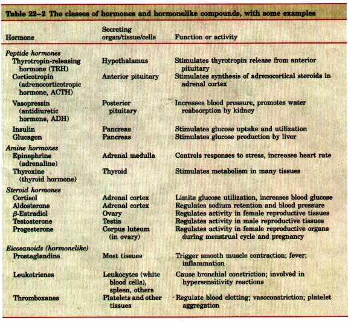
There are three chemically distinct classes of hormones: peptides, amines, and steroids (Table 22-2). A fourth group of extracellular signals, the eicosanoids, are hormonelike in their actions, but act locally.
The peptide hormones, which may have from 3 to over 200 amino acid residues, include all of the hormones of the hypothalamus and pituitary and the pancreatic hormones insulin, glucagon, and somatostatin. The amine hormones, low molecular weight compounds derived from the amino acid tyrosine, include water-soluble epinephrine and norepinephrine of the adrenal medulla and the less watersoluble thyroid hormones. The steroid hormones, which are fatsoluble, include the adrenal cortical hormones, hormone forms of vitamin D, and the androgens and estrogens (the male and female sex hormones) (see Fig. 9-15). They move through the bloodstream bound to specific carrier proteins. Eicosanoids are derivatives of the 20 carbon polyunsaturated fatty acid arachidonate (see Fig. 9-17). All three subclasses of eicosanoids (prostaglandins, leukotrienes, and thromboxanes) are unstable and insoluble in water; these signaling molecules generally do not move far from the tissue that produced them, and they act primarily on cells very near their point of release.
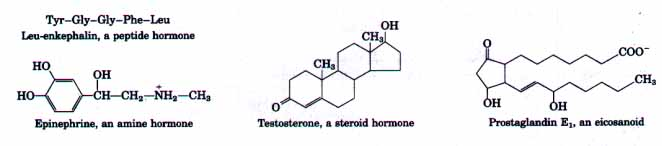
Hormones normally occur in very low concentrations in the blood, in the micromolar (10-6 M) to picomolar (10-12 M) range; this may be contrasted with the normal concentration of glucose in the blood, which is in the millimolar range (about 4 × 10-3 M). For this reason, hormones have been very difficult to isolate, identify, and measure accurately. The exceedingly sensitive technique of radioimmunoassay developed by Rosalyn Yalow and Solomon A. Berson revolutionized hormone research by making possible the quantitative and specific measurement of many hormones in minute concentrations. A newer variation of this technique, called an enzyme-linked immunosorbent assay (ELISA), is illustrated in Figure 6-9.
When a given hormone is secreted, its concentration in the blood rises, sometimes by orders of magnitude. When secretion stops, the hormone concentration quickly returns to the resting level. Hormones have a short existence in the blood, often only minutes; once their presence is no longer required they are quickly inactivated enzymatically.
Some hormones yield immediate physiological or biochemical responses. Seconds after epinephrine is secreted into the bloodstream by the adrenal medulla, the liver responds by pouring glucose into the blood. By contrast, the thyroid hormones and the estrogens promote maximal responses in their target tissues only after hours or even days. These differences in response time correspond to a difference in mode of action (Fig. 22-12). In general, the fast-acting hormones lead to a change in the activity of one or more preexisting enzyme(s) in the cell, by allosteric mechanisms or by covalent modification of the enzyme(s). The slower-acting hormones generally alter gene expression, resulting in the synthesis of more or fewer copies of the regulated protein(s). All hormones act through specific receptors present in hormonesensitive target cells, to which hormones bind with high specificity and high affmity. Each cell type has its own combination of hormone receptors, defining the range of its hormone responsiveness. Two cell types with the same receptor may have different intracellular targets of hormone action and thus may respond differently to the same hormone. The water-soluble peptide and amine hormones do not penetrate cell membranes readily; their receptors are located on the outer surface of the target cells (Fig. 22-12). The lipid-soluble steroid and thyroid hormones readily pass through the plasma membrane of their target cells; their receptors are specific proteins located in the nucleus. Upon hormone binding to a plasma membrane receptor, the receptor protein undergoes a conformational change analogous to that produced in an allosteric enzyme by effector binding. In its altered form, the receptor either produces or causes production of an intracellular messenger molecule, often called the second messenger. We have already encountered one second messenger, adenosine 3',5'-cyclic monophosphate (cAMP), in our discussion of the regulation of glycogen synthesis and breakdown (see Fig. 14-18; Table 19-4). The second messenger conveys the signal from the hormone receptor to some enzyme or molecular system in the cell, which then responds. The second messenger either regulates a specific enzymatic reaction or changes the rate at which a specific gene or set of genes is translated into protein(s). In the case of steroid and thyroid hormones, the hormonereceptor complex itself carries the message; it alters the expression of specific genes. |
Figure 22-12 Two general mechanisms of hormone action. The peptide and amine hormones are faster acting than steroid and thyroid hormones. 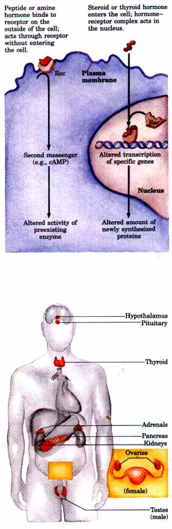 Figure 22-13 The major endocrine glands (shaded red). |
Now let us briefly examine the major endocrine systems of the human body and some of their functional interrelationships. Figure 22-13 shows the anatomical location of the major endocrine glands important in the regulation of metabolism in humans. The word endocrine (from the Greek endon, meaning "within," and krinein, "to release") means that the secretions of such glands are internal, that is, released into the blood. [Exocrine glands secrete their products (tears, sweat, digestive enzymes) "outward," through ducts that lead to the body surface or the intestinal lumen.] Figure 22-14 is a schematic master plan of the regulatory relationships among the endocrine glands and their target tissues in humans.
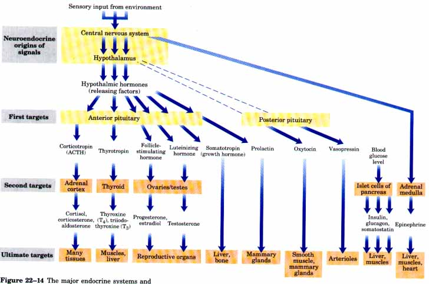
Figure 22-14 The major endocrine systems and their target tissues. Signals originating in the central nervous system (top) are passed via a series of relays to the ultimate target tissues (bottom). In addition to the systems shown, the thymus and pineal glands, as well as groups of cells in the gastrointestinal tract, also secrete hormones.
| The hypothalamus, a
specialized portion of the brain (Fig. 2215), is the
coordination center of the endocrine system; it receives
and integrates messages from the central nervous system.
In response to these messages the hypothalamus produces a
number of regulatory hormones, which pass to the anterior
pituitary gland, located just below the
hypothalamus. Some hypothalamic hormones ("releasing
factors") stimulate the anterior pituitary to
secrete a given hormone; others are inhibitory. Once
stimulated, the anterior pituitary secretes hormones into
the blood to be carried to the next rank of endocrine
glands, which includes the adrenal cortex,
the thyroid gland, the ovary
and testis, and the endocrine cells of
the pancreas. These glands in turn are
stimulated to secrete their specific hormones, which are
carried by the blood to hormone receptors on or in the
cells of the target tissues. The posterior pituitary contains the axonal endings of many neurons that originate in the hypothalamus. In these neurons, two short peptide hormones, oxytocin and vasopressin (Fig. 22-16), are formed from longer precursor peptides. These peptide hormones move down the hypothalamic axons to the nerve endings in the pituitary, where they are stored in secretory granules. Oxytocin (Mr 1,007) acts on the smooth muscles of the uterus and mammary gland, causing uterine contractions during labor and promoting milk release during lactation. Vasopressin (also called antidiuretic hormone, A.DH; Mr 1,040) increases water reabsorption in the kidney and promotes the constriction of blood vessels, thereby increasing blood pressure. The final link in this system is the intracellular mechanism triggered by the hormone receptor: either a second messenger that carries the message from the hormone receptor to the specific cell structure or enzyme that is the ultimate target, or the alteration of gene expression by a hormone-receptor complex bound to DNA. Thus each endocrine system resembles a set of relays, carrying messages through several steps from the central nervous system to a specific effector molecule in the target cells. The hypothalamus functions at the top of the hierarchy of many hormone-producing tissues (Fig. 22-14). It receives neural input from diverse regions of the brain and feedback signals from hormones circulating in the blood. These signals are integrated in the hypothalamus, which responds by releasing appropriate hormones to the next tissue in the cascade, the pituitary. The hormones secreted by the hypothalamus are relatively short peptides (see, for example, Fig. 5-19c), produced in very small quantities. A number of these were first isolated and characterized by Roger Guillemin and Andrew Schally. The hypothalamic hormones pass directly to the nearby pituitary gland through special blood vessels and neurons that connect the two glands (Fig. 22-15b). The pituitary gland has two functionally distinct parts. The anterior pituitary responds to hypothalamic hormones carried in the blood, by producing six tropic hormones or tropins (from the Greek tropos, meaning "turn"), relatively long polypeptides that activate the next rank of endocrine glands (Fig. 22-14). Adrenocorticotropic hormone (ACTH, also called corticotropin; Mr 4,500) stimulates the adrenal cortex; thyroid-stimulating hormone (TSH, also called thyrotropin; Mr 28,000) acts on the thyroid gland; follicle-stimulating hormone (FSH; Mr 34,000) and luteinizing hormone (LH; Mr 20,500) act on the gonads; and growth hormone (GH, also called somatotropin; Mr 21,500) stimulates the liver to produce several growth factors. |
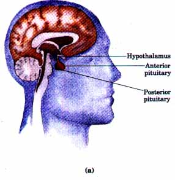 Figure 22-15 (a) Location of the hypothalamus and pituitary gland. (b) Details of the hypothalamus-pituitary system. Signals arriving from connecting neurons stimulate the hypothalamus to secrete hormones destined for the anterior pituitary into a special blood vessel, which carries the hormones directly to a capillary network in the anterior pituitary. In response to each hypothalamic hormone, the anterior pituitary releases its appropriate hormone into the general circulation. Posterior pituitary hormones are made in neurons arising in the hypothalamus, transported in axons to nerve endings in the posterior pituitary, and stored there until released into the blood in response to a neuronal signal. 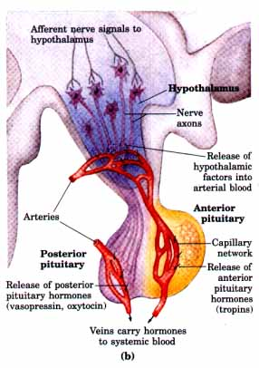 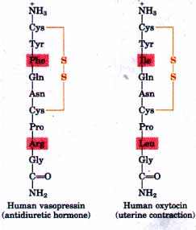 Figure 22-16 Two hormones of the posterior pituitary gland. The carboxyl-terminal residues are glycinamide (-NH-CH2-CONH2); amidation of the carboxyl terminus is common in short peptide hormones. These two hormones, identical in all but two residues (shaded) have very different biological effects. |
| Thyroid Hormones
The thyroid hormones are released when the hypothalamus
secretes thyrotropin-releasing hormone, which stimulates
the anterior pituitary to release thyrotropin, which in
turn stimulates the thyroid gland to secrete its two
characteristic hormones: Lthyroxine (T4) and
L-triiodothyronine (T3) (Fig. 22-17). Small amounts of T4
and T3 stimulate energy-yielding metabolism, especially
in liver and muscle. These hormones bind to a specific
intracellular receptor protein; the hormone-receptor
complex activates certain genes encoding energy-related
enzymes, increasing their synthesis and thus increasing
the basal metabolic rate of the animal. The basal metabolic rate (BMR) is a measure of the rate of O2 consumption by an individual at complete rest, 12 hours after a meal. Measurement of the BMR is useful in the diagnosis of thyroid malfunction. Hyperthyroid individuals (those who oversecrete thyroid hormones) have an elevated BMR; hypothyroidism is characterized by a lowered BMR. The level of protein-bound iodine (T3 and T4 bound to their carrier proteins) in the blood also is a useful measure of thyroid function. |
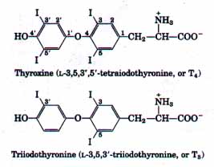 Figure 22-17 The thyroid hormones T4 and T3. Both are derived from L-tyrosine. Synthesis begins with the iodination of certain Tyr residues in the protein thyroglobulin (Mr 650,000). Further modifications of these residues yield T4 and T3, which remain bound to thyroglobulin until released by proteolytic enzymes. |
Steroid Hormones The major steroid hormones are the adrenocortical hormones, the sex hormones (androgens and estrogens), and vitamin D-derived hormones. These hormones are lipid-soluble and readily pass through plasma membranes into the cytosol of target cells. Here they combine with specific intracellular receptor proteins, and these complexes, like the thyroid hormone-receptor complexes, act in the nucleus, causing certain genes to be expressed (Fig. 22-12). Most steroid hormone receptors are localized in the nucleus; others may move from the cytosol to the nucleus only when bound to the hormone. Adrenocortical hormones are produced by cells in the outer portion (cortex) of the adrenal glands, which are located just atop the kidneys ("adrenal"). When an animal is under stress, the hypothalamus secretes corticotropin-releasing hormone, which stimulates the anterior pituitary to release corticotropin into the blood. Corticotropin in turn signals the adrenal cortex to produce its characteristic corticosteroid hormones, including cortisol, corticosterone, and aldosterone (Fig. 22-14). Over 50 corticosteroid hormones of two general types are produced in the adrenal cortex: glucocorticoids and mineralocorticoids. Glucocorticoids affect primarily the metabolism of carbohydrates, and mineralocorticoids regulate the concentrations of electrolytes in the blood.
| The androgens (testosterone) and the
estrogens (such as estradiol; see Fig. 9-15) are
synthesized in the testes and ovaries, respectively (Fig.
22-14). They affect sexual development, sexual behavior,
and a variety of other reproductive and nonreproductive
functions. Steroid hormones produced from vitamin D by
enzymes in the liver and kidneys (see Fig. 9-19) regulate
the uptake and metabolism of Caz+ and phosphate,
including the formation and mobilization of calcium
phosphate in bone. Amine Hormones The water-soluble hormones epinephrine, norepinephrine, dopa, and dopamine are in a class of amines called catecholamines, derivatives of catechol (Fig. 22-18). Epinephrine (adrenaline) and norepinephrine (noradrenaline) are closely related hormones, made and secreted by the inner portion (medulla) of the adrenal glands in response to signals from the central nervous system (Fig. 22-14). Normally the epinephrine level in blood is only about 10-10M, but sensory stimuli that alarm the animal and galvanize it for action lead to the release of epinephrine from the adrenal medulla and a 1,000-fold increased concentration in the blood within seconds or minutes. The catecholamines are also made in the brain and other neural tissue, where they function as neurotransmitters. |
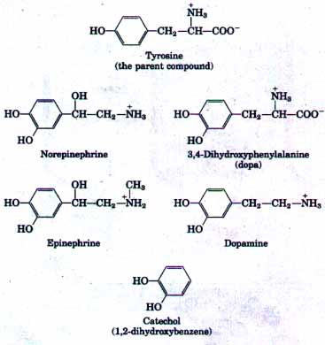 Figure 22-18 The catecholamine hormones. They are formed from tyrosine (top) and are derivatives of catechol (bottom). The abbreviation "dopa" is derived from the German name of the compound, dioxyphenylalanin. |
| Peptide Hormones: Insulin,
Glucagon, and Somatostatin The pancreas has
two major biochemical functions: exocrine cells produce
digestive enzymes for secretion into the intestine, and
endocrine cells produce and secrete peptide hormones that
regulate fuel metabolism throughout the body. The peptide
hormones insulin, glucagon, and somatostatin are produced
by clusters of specialized cells called the islets of
Langerhans (Fig. 22-19). Each islet cell type produces a
single hormone: a cells produce glucagon; β cells,
insulin; and δ cells, somatostatin. Figure 22-19 The endocrine system of the pancreas. In addition to the exocrine or acinar cells (see Fig. 17-3b), which secrete digestive enzymes in the form of zymogens, the pancreas contains endocrine tissue consisting of the islets of Langerhans. The islets contain several different types of cells, each of which excretes a specific polypeptide hormone. (a) Schematic drawing of an islet, showing the a, β, and δ cells (also known as A, B, and D cells, respectively). (b) Micrograph of a portion of an islet of Langerhans of human pancreas. |
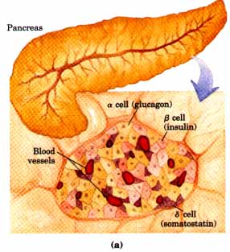 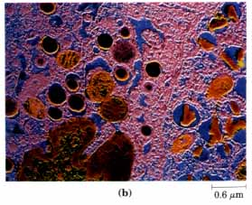 |
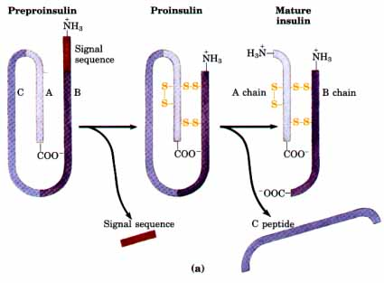 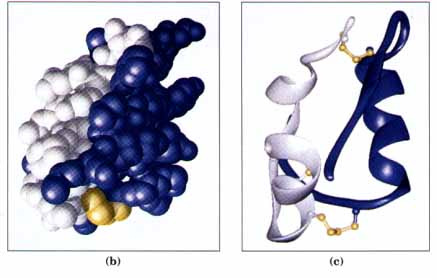 Glucagon (Fig. 22-21) is a single polypeptide chain of 29 amino acid residues, and like insulin is derived from larger precursors (preproglucagon and proglucagon) by precise proteolytic cleavages. Somatostatin, also a polypeptide hormone (Fig. 22-21), inhibits the secretion of insulin and glucagon by the pancreas. Somatostatin is produced and secreted not only by pancreatic δ cells, but also by the hypothalamus and certain intestinal cells. |
Figure 22-20 Insulin formation. (a) Mature
insulin is formed from its larger precursor preproinsulin
by proteolytic processing. Removal of 23 amino acids (the
signal sequence) at the amino terminus of preproinsulin
and formation of three disulfide bonds produces
proinsulin. Further proteolytic cuts remove the C
peptide, leaving mature insulin, composed of A and B
chains. (b) Space-filling and (c)
ribbon models of porcine insulin. The amino acid sequence
of bovine insulin is shown in Fig. 6-10
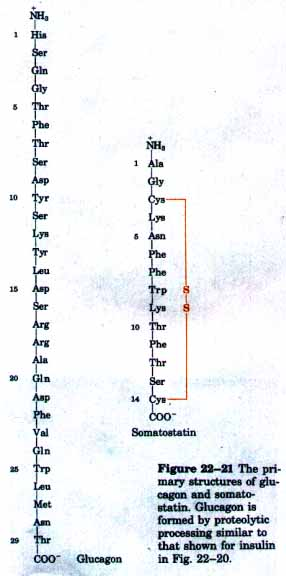 |